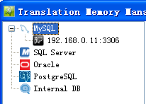
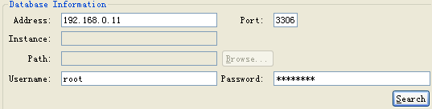
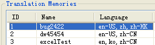
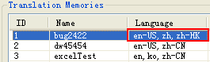
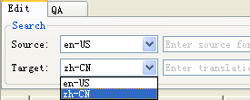

Heartsome TMX Editor 8 is a dedicated editing tool for Heartsome Translation Studio 8 TM. The following shows you how to use Heartsome TMX Editor 8 to edit Heartsome Translation Studio 8 TMs.
Heartsome Translation Studio 8 TM files are either file based or server based.
File-based TM
1. Select File > Connect to TM > File-based TM.
2. Browse to Heartsome Translation Studio 8 TM (.hstm).
3. Click the OK button, the editor will load all contents of the TM.
1. Select File > Connect to TM > Server-based TM.
2. Select the TM server type you want to connect to.

3. Enter the IP address, port, username and password, then click the Search button.

4. Once the TM is listed, select the one you want to edit, then click the OK button. The contents of the TM will be loaded.

1. Heartsome Translation Studio 8 is a multilingual tool. When a server-based TM is listed, you can see the languages of each TM it contains in the Language column.
As you can see, the TM "bug2422" contains 3 languages: "en-us", "zh" and "zh-hk".
2. When you open a multilingual TM, you can select the language pair that you want to edit from the Source and Target field.

3. Once this is done, click Search to load the contents of the selected languages in the TM.
To enter editing mode, you can just click a source or target cell.